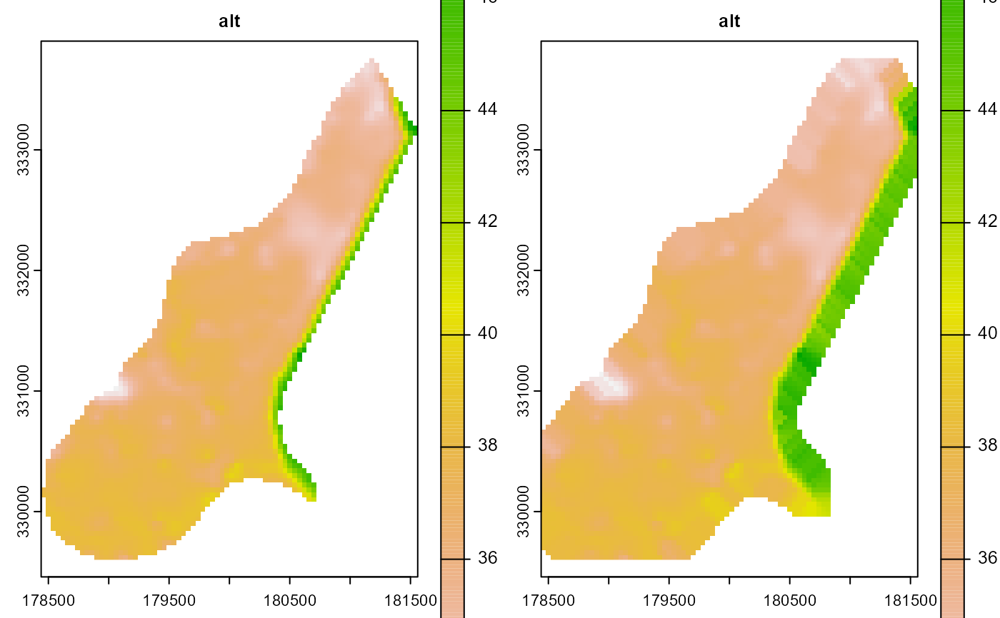

This function fills NA values in a raster using a focal median filter, which is particularly useful for smoothing raster data and interpolating missing values.
Arguments
- x
A
SpatRasterobject from theterrapackage. This is the raster where NA values need to be filled.- w
A matrix representing the focal window to be used. Typically, this is a square matrix with odd dimensions, such as 3x3 or 5x5, which determines the neighborhood of cells used to compute the median.
- i
An integer specifying the number of iterations to apply the focal filter. More iterations can lead to smoother results but may also alter the data significantly.
- verbose
A logical value indicating whether to print the iteration number during processing. Default is
FALSE.
Value
A SpatRaster object with NA values filled using the median of the surrounding values within the specified focal window.
Details
The function iteratively applies a focal median filter to fill NA values in a raster. The median filter is commonly used in image processing to reduce noise while preserving edges, making it a robust choice for filling missing values in raster datasets.
Each iteration recalculates the median for the neighborhood defined by w, and replaces NA values in x with these medians. The number of iterations (i) controls how many times this process is repeated, which can be necessary when large gaps of NA values need to be filled progressively.
If verbose is set to TRUE, the function will print the current iteration number to provide insight into the process.
Examples
# Load the meuse.grid data
data(meuse.grid, package = "spEnviroDistr")
coordinates(meuse.grid) = ~x+y
proj4string(meuse.grid) <- CRS("+init=epsg:28992")
gridded(meuse.grid) <- TRUE
# Convert meuse.grid to SpatRaster
r <- rast(meuse.grid)
# Define the focal window (3x3 matrix)
w <- matrix(1, 3, 3)
# Fill NA values with 3 iterations and verbose output
result <- fillNA(r[["alt"]], w, 3, verbose = TRUE)
#> Iteration: 3
#> Iteration: 2
#> Iteration: 1
# Plot the result
plot(c(r[["alt"]], result))
